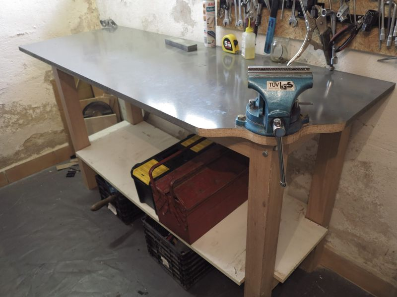

La Fabrique
Fermeture de fin d'année
17 novembre 2026
La Fabrique ferme pour les fêtes, du 21 décembre 2026 au 3 janvier 2027 inclus.

Le nouveau site de La Fabrique
17 novembre 2026
La Fabrique a un nouveau site : ses ateliers, son agenda et les réalisations de ses membres, lisibles d'abord sur le téléphone.
Bienvenue à La Fabrique, atelier partagé à Strasbourg, que fait vivre l'association. Ses prochaines séances sont dans l'agenda.